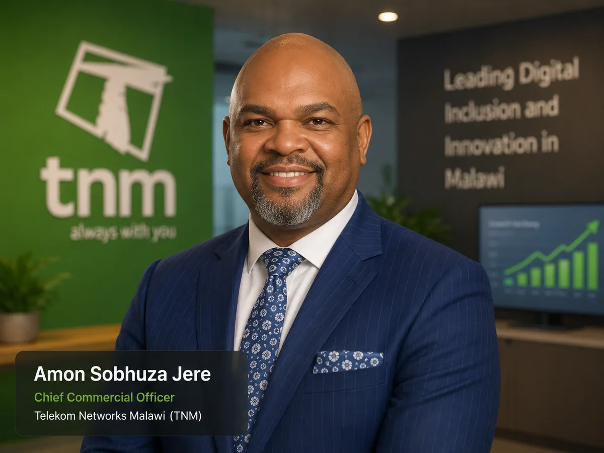
Amon Jere
Chief Commercial Officer
Telekom Networks Malawi (TNM)
A cross-sector group of leaders participating in the executive learning journey.

Chief Commercial Officer
Telekom Networks Malawi (TNM)
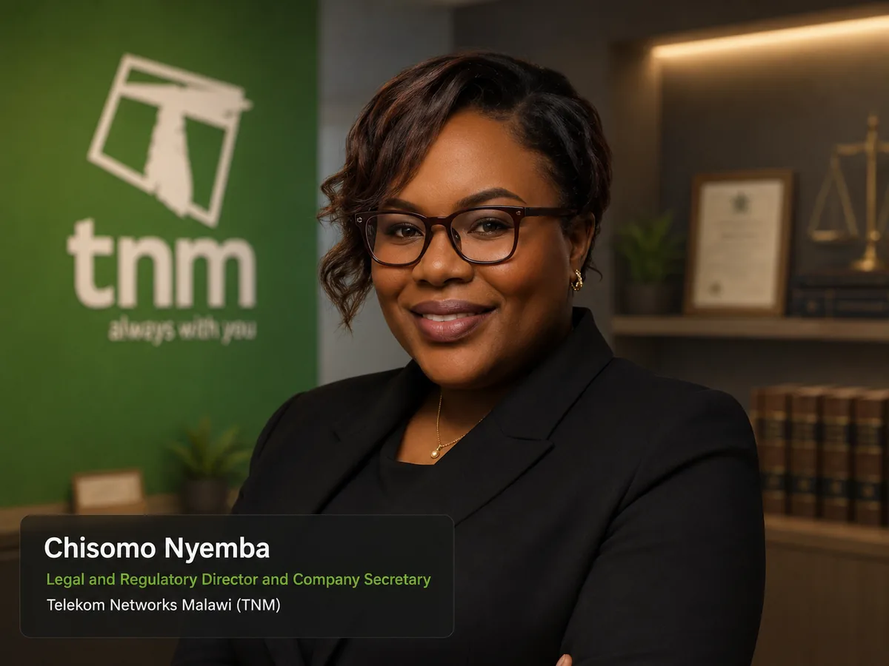
Legal and Regulatory Director and Company Secretary
Telekom Networks Malawi (TNM)
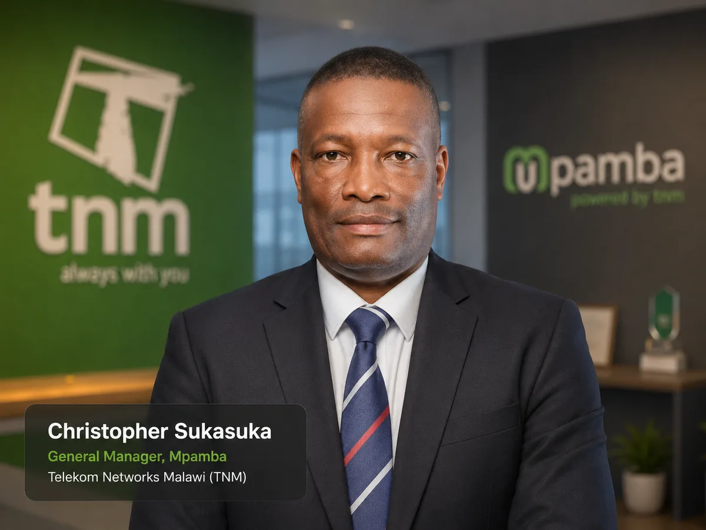
General Manager, Mpamba
Telekom Networks Malawi (TNM)
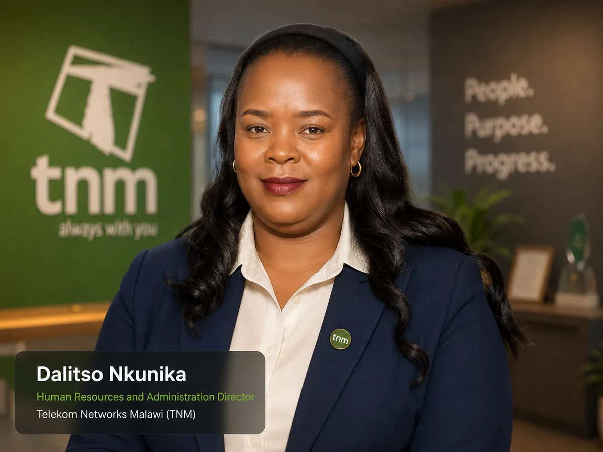
Human Resources and Administration Director
Telekom Networks Malawi (TNM)
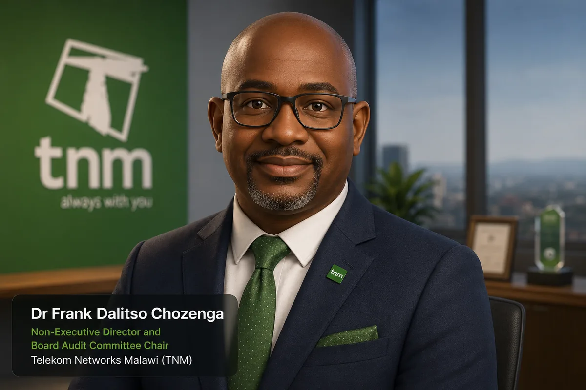
Non-Executive Director and Board Audit Committee Chair
Telekom Networks Malawi (TNM)
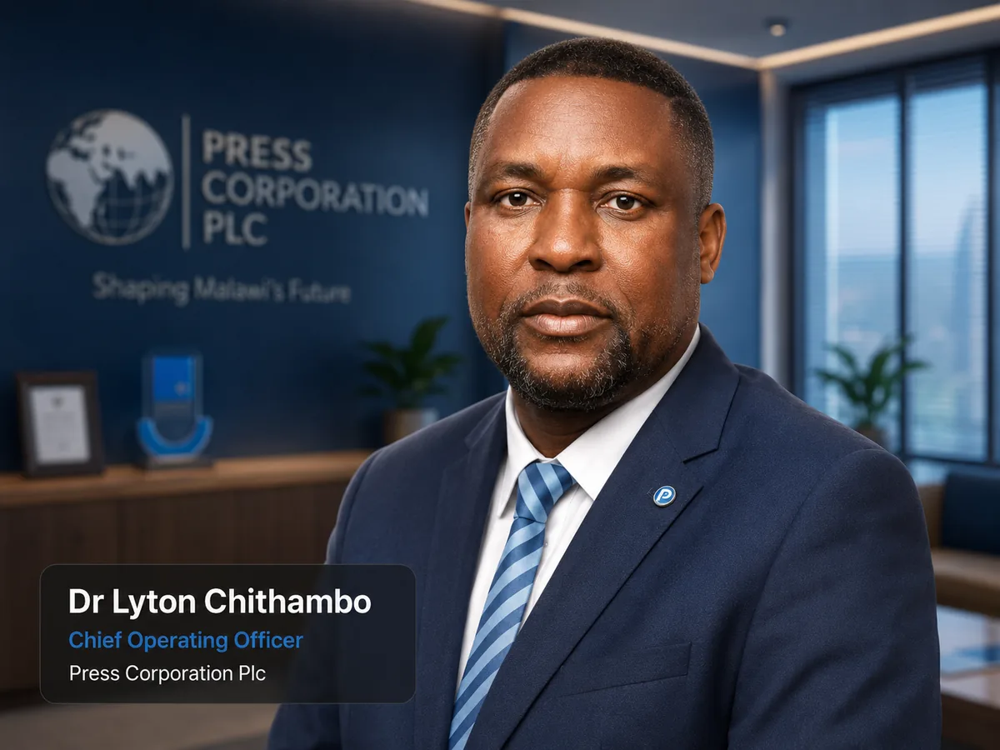
Chief Operating Officer
Press Corporation Plc
Group IT Executive
Old Mutual Malawi
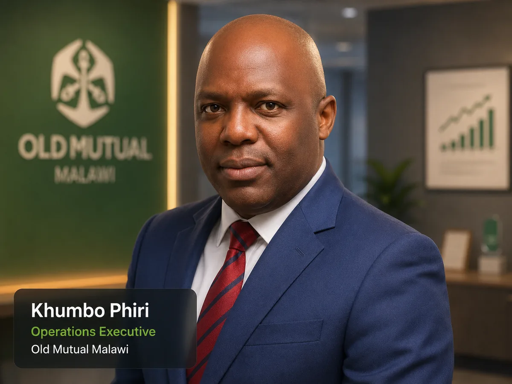
Operations Executive
Old Mutual Malawi
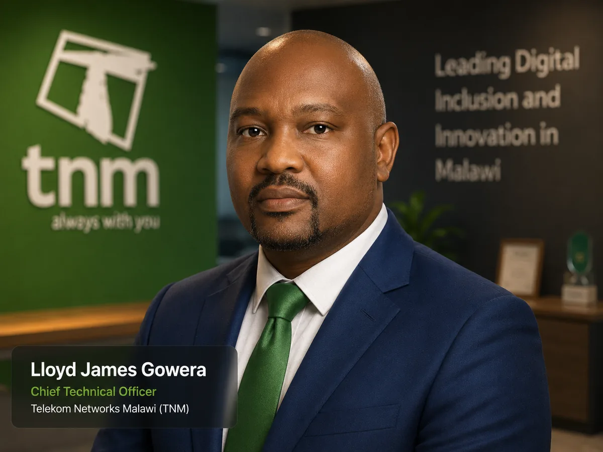
Chief Technical Officer
Telekom Networks Malawi (TNM)
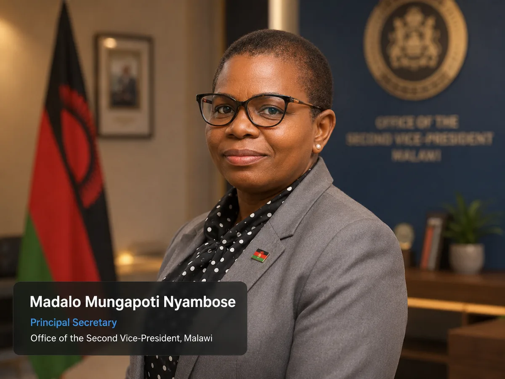
Principal Secretary
Office of the Second Vice-President, Malawi
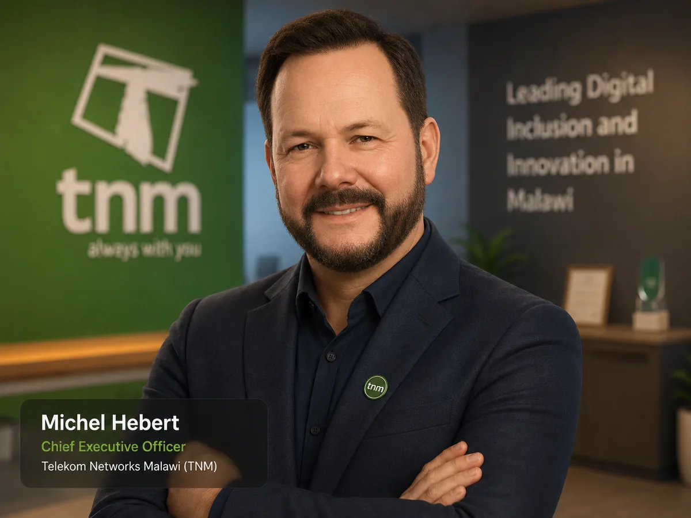
Chief Executive Officer
Telekom Networks Malawi (TNM)
Chief Finance Officer
Telekom Networks Malawi (TNM)
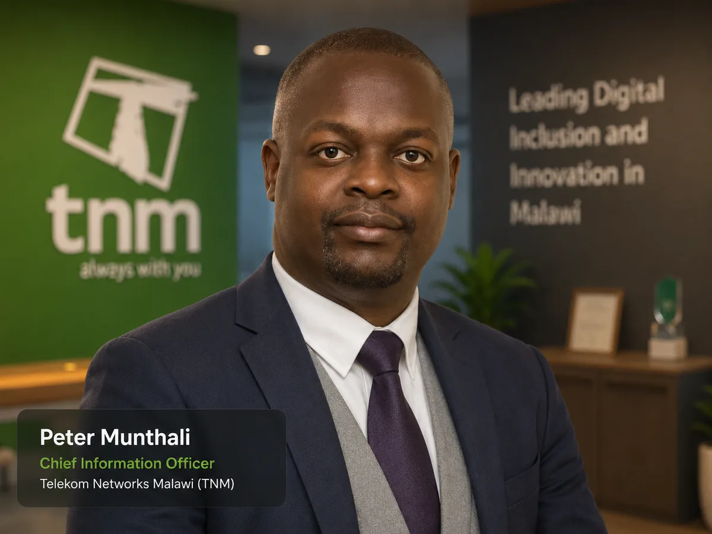
Chief Information Officer
Telekom Networks Malawi (TNM)
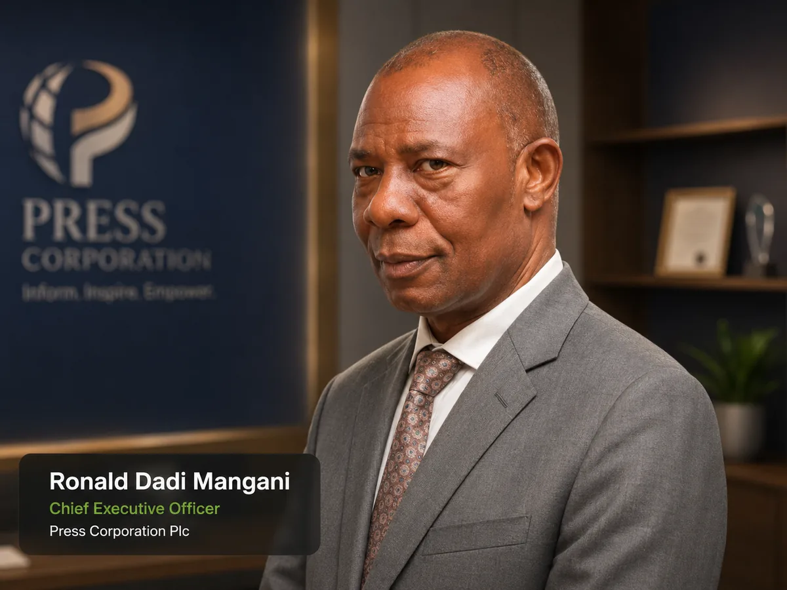
Chief Executive Officer
Press Corporation Plc
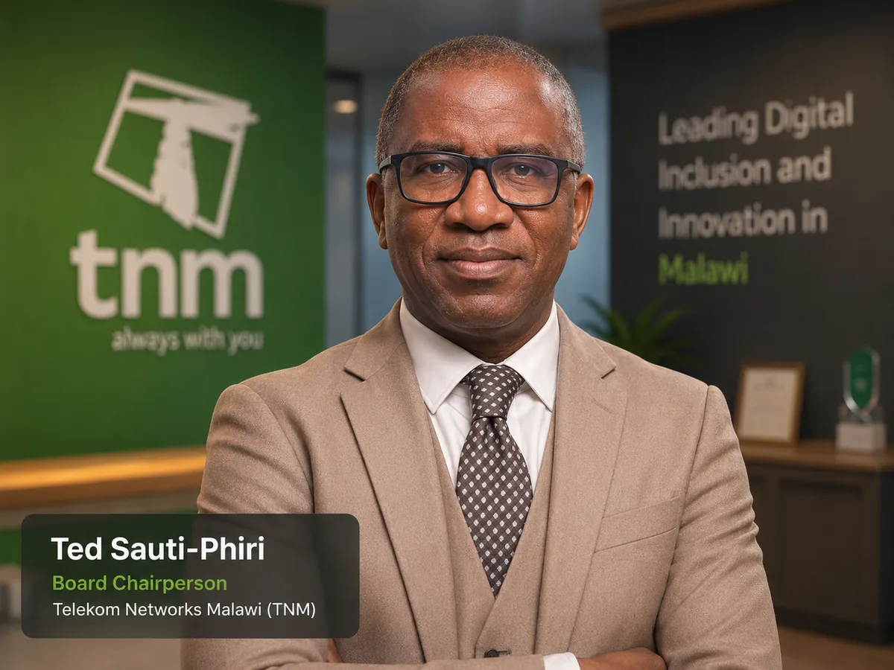
Board Chairperson
Telekom Networks Malawi (TNM)
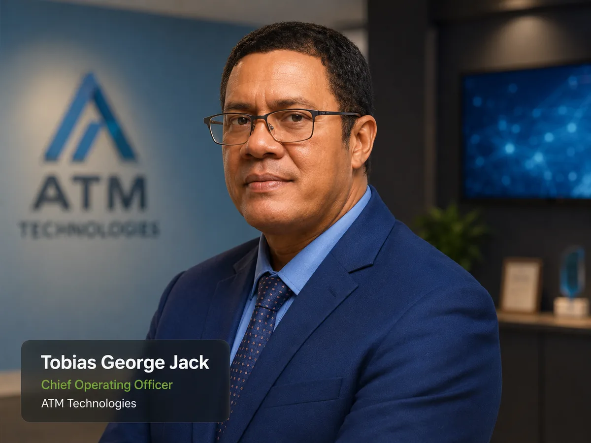
Chief Operating Officer
ATM Technologies